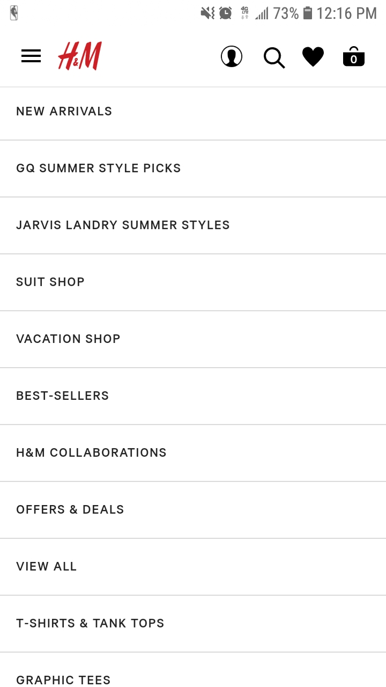
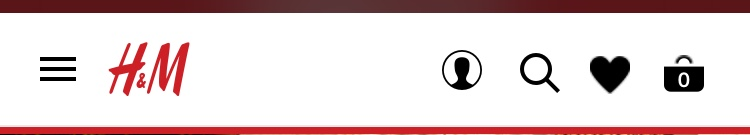
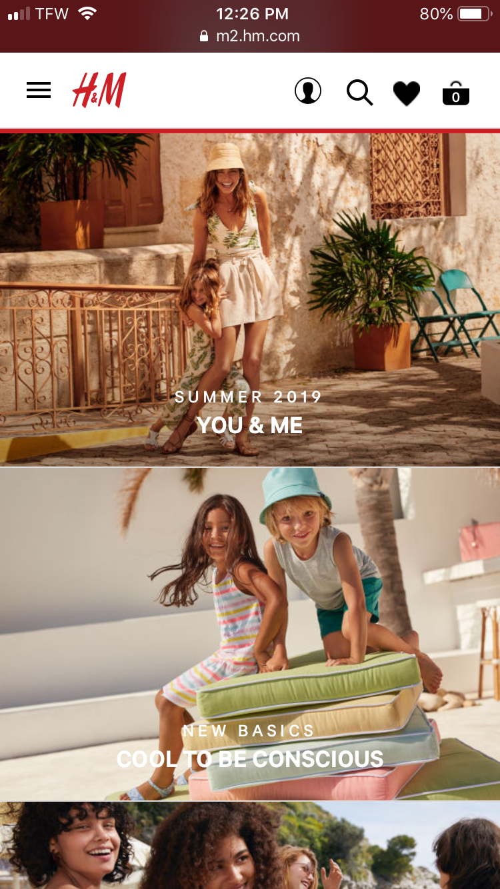
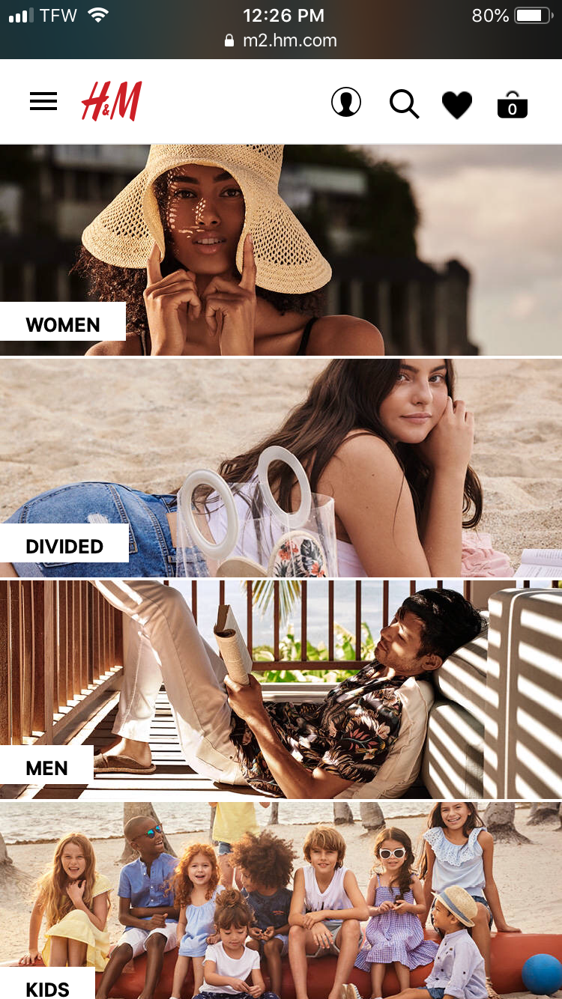
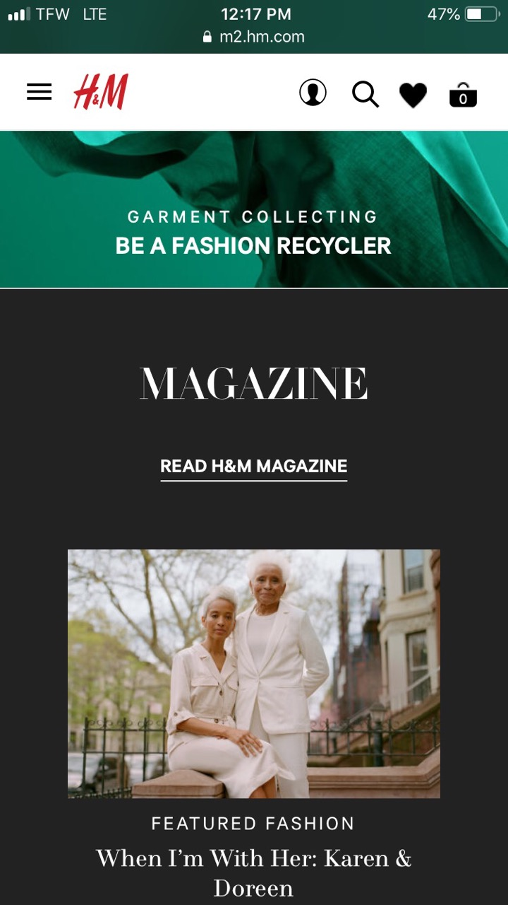
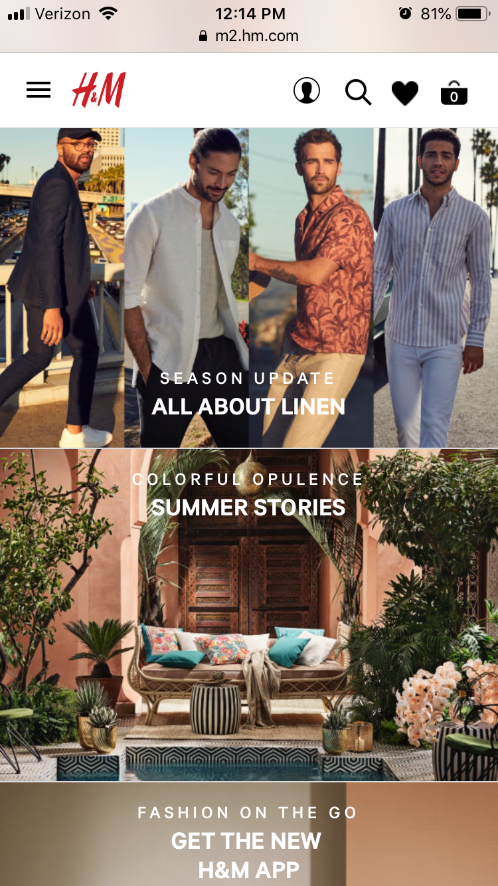
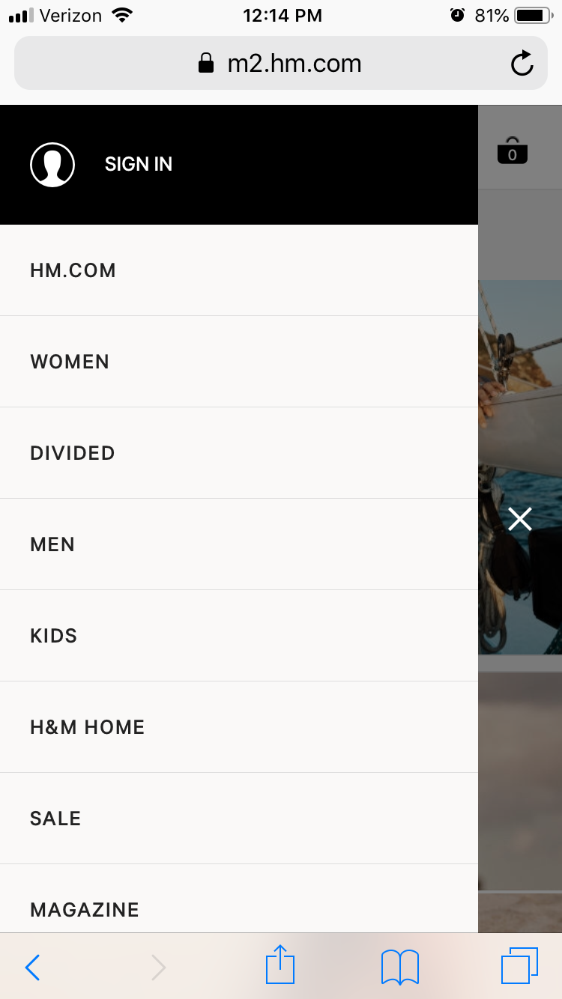

Design Principles
PROXMITY
.PNG)
H&M utilize grouping techniques to organize their content in a clean manner. In the home page, they group
similar items such as pictures in order to create a most appealing view for visitors so it is easy to
identify offers and commonly purchased items. They also show grouping of icons with a top boundary in
order to utilize the most common commands such as login, search, like and shopping cart.
ALIGNMENT

The company also does a good job of alignment techniques in the mobile website as displayed in the Menu bar
where all the sections are left aligned and with appropriate spacing between border lines and actual text.
The top quick links are also appropriately right aligned in order to separate them from the menu button which
is left aligned next to the H&M logo.
REPETITION
  
H&M departments and catalogs are organized by sizes. Departments are smaller and catalogs/articles are larger.
This makes the page look uniform and helps to make these links easily identifiable by distinguishing the
different categories from one another.
The bar at the top of the website remains no matter what page you are on. This makes it difficult for users to
get lost on the website, giving them a singular and constant reference point.
CONTRAST

The main color scheme here seems to be white and red. This is a contrast between warm and cool colors, which
causes the eye to be attracted to any red on the screen. The most notable use of red on this website is the
sites logo and the “sale” banner.
The magazine section of the website trades a white background for a dark one. This color change makes it
apparent to the user that they have transitioned from one part of the website to another. You can also
see in this section that the dark background contrasts with the bright pictures, emphasizing these images
to the viewer.
TYPOGRAPHY
 
The layout of type that H & M uses is interesting because it uses a very simple type font.
They use it so it is easy for the user to read and understand. The colors that were chosen also
make the typography a key part of the website because they chose a light font color when the
background is dark and also choose a dark font color when the background is light. For example,
white font against a navy blue background or black font against a light tan background.
Site Prspose statement
What is pupose statement
Target Audience
- "age" "20 - 40"
- "Income" "15000 - 100000"
- "Other" "Trendy clothing / family clothing"
H & M is a clothing store that is family oriented, however appeal to the 16 - 40 years age group
It attracts slim and fit people to buy their fitted clothing as well as promote buying trendy clothing
for children and babies as well.
- "Name"
- "Occupation"
- "Primary Device"
- "Quote"